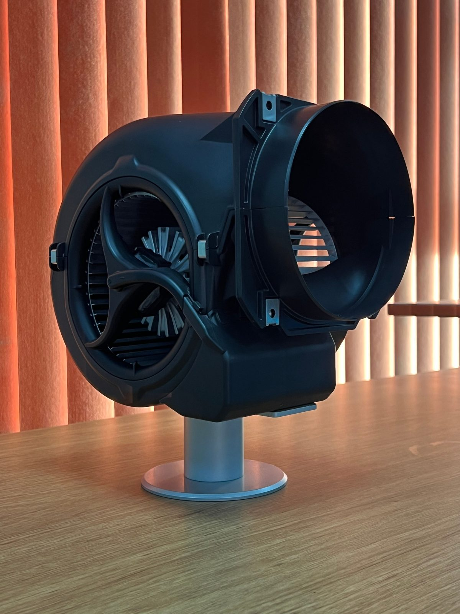

Water has been extracted, but your home isn't dry yet. The framing inside your walls, the concrete slab under your flooring, the subfloor between levels, and the insulation in your attic are still holding moisture that fans and open windows will never reach. Structural drying is the controlled, measured process that gets those materials to verified dry standards, and prevents the mold growth that starts within 48 hours on wet building materials in North Texas.
How Does Professional Structural Drying Work in Plano, TX?
Structural drying uses LGR (low-grain refrigerant) dehumidifiers, high-velocity air movers, wall-cavity drying systems and floor mat systems to pull moisture out of building materials, framing, drywall, concrete slab, subfloor, hardwood, insulation, to documented dry standards per the IICRC S500 protocol. Our IICRC certified technicians take daily moisture readings with Protimeter meters and FLIR thermal cameras, adjusting equipment placement until every material in your Plano home hits its verified dry target. Call (214) 833-4785 for 24/7 structural drying setup.
Why "It Feels Dry" Isn't Dry
The surfaces you can see and touch, carpet face, top of tile, painted drywall, dry first. They feel dry within hours. But behind them:
Wall framing holds moisture inside cavities you can't see or touch
Concrete slab absorbs water through its porous surface and releases it slowly for days
Subfloor (OSB or plywood) traps moisture between the flooring above and the slab or joists below
Attic insulation holds water like a sponge and drips onto ceiling joists
Hardwood flooring absorbs water from underneath and cups or buckles days after the surface feels dry
If any of these materials stay above their dry standard, mold starts growing on the concealed side, the side facing the wall cavity, the underside of subfloor, the back of drywall. You won't see it for weeks or months. By then, you have a mold remediation job on top of the original water damage.
Save Your Walls
Drying Wet Walls Without Cutting Drywall
When water is caught early and it's clean, many walls can be dried in place. We drill small holes behind the baseboard and push dry air directly into the cavity with wall injection systems, so wet drywall and studs dry from the inside.
This approach to wall cavity drying in Plano TX can save drywall, paint and texture, which means less demolition and a smaller rebuild. If the water was contaminated, or drywall has lost its strength, we'll recommend a controlled cut instead.

Equipment
Structural Drying Equipment We Use
LGR Dehumidifiers
Low-grain refrigerant dehumidifiers are the industry standard for structural drying. Unlike conventional dehumidifiers, LGR units strip moisture from air down to extremely low grain levels, creating a vapor pressure difference that pulls moisture out of wet building materials into the air where the dehumidifier captures it. We calculate the number and placement of LGR units based on the volume of the affected area, the materials involved, and ambient conditions.
High-Velocity Air Movers
Air movers create airflow across wet surfaces at high speed, accelerating evaporation from the surface of materials so the dehumidifiers can capture it. Placement matters, air movers directed incorrectly can push moisture deeper into materials or spread contamination. We follow IICRC S500 placement protocols for every job.
Wall-Cavity Drying Systems
When water enters a wall cavity, from a burst pipe, slab leak, or flood, the framing, insulation, and back side of drywall inside that cavity can't dry from surface airflow alone. Wall-cavity drying systems inject dry air directly into the cavity through small ports drilled at the base of the wall, pushing moisture out through the top. This method saves drywall that would otherwise need to be cut out to expose the framing.
Hardwood Floor Mat Systems
Hardwood floors cup because moisture is trapped underneath the wood. Floor mat systems apply controlled vacuum and heat through the surface of the wood, pulling moisture through the grain from underneath without pulling boards up. When started within 12 to 24 hours of the water loss, floor mats can save hardwood floors that would otherwise need full replacement, often saving homeowners $10,000 to $25,000 in flooring costs.
Desiccant Dehumidifiers
For extremely deep structural drying, thick concrete slabs, multi-layer commercial flooring, walk-in cooler slabs, desiccant dehumidifiers deliver hot, extremely dry air that penetrates deeper than LGR units alone. We use desiccant systems on commercial and slab-heavy residential jobs when standard LGR drying timelines need to be shortened.
Deep Drying
Drying Studs, Insulation, Subfloors and Slabs
Wood Framing and Sill Plates
Wood studs and sill plates have dry targets based on the wood's normal moisture content. We measure wood moisture equivalent and keep drying until readings match unaffected framing in the same home.
Wet Insulation
Fiberglass batts that are only lightly damp may dry, but soaked or contaminated insulation is removed. Blown-in attic insulation is usually removed when it's saturated.
OSB and Plywood Subfloors
Upstairs leaks soak into the subfloor. Subfloor and framing drying in Plano often needs drying from both above and below.
Concrete Slabs
Concrete holds water and releases it slowly. Slabs may need several days of targeted drying, especially after a slab leak.
Timelines
How Long Does Structural Drying Take in Plano?
Material
Typical Drying Time
Carpet and pad (after extraction)
1-2 days
Drywall (lower 2 feet, one side exposed)
2-3 days
Wall cavities with framing
3-4 days
Plywood or OSB subfloor
3-5 days
Concrete slab
5-7+ days
Hardwood flooring (with mat system)
3-7 days
Attic insulation and joists
2-4 days
North Texas humidity, especially from April through October, adds time because ambient air carries more moisture. LGR dehumidifiers compensate, but equipment must run continuously. We tell you the expected timeline up front after the initial moisture mapping.
Daily Monitoring and Proof of Dryness
We visit every day to record temperature, relative humidity, grains per pound and material moisture. Equipment gets moved or removed as areas dry. When the job is complete, you get a record showing each area reached its dry goal, which is useful for your insurance claim and for any future home sale.
Moisture trapped behind baseboards, under cabinets or inside walls gets checked specifically, because those are the places that cause problems later. See moisture mapping inspection.
Why DIY Drying Fails
Household dehumidifiers can't keep up with a full water loss
Fans alone push humid air around without removing moisture
Without meters, there's no way to know when framing is actually dry
Closing up a wet wall traps moisture and invites mold
Pairing industrial air movers and dehumidifiers for a flooded house with daily readings is the only reliable way to dry the structure.
Our Process
Structural Drying Process, Step by Step
01
Moisture Mapping
Before placing any equipment, we map every affected material with FLIR thermal cameras and Protimeter moisture meters. The map shows us exactly where moisture is, how deep it goes, and which materials are affected. This map becomes the baseline for daily monitoring, and the documentation your insurance adjuster needs.
02
Psychrometric Calculation
We measure temperature, relative humidity and grain depression in the affected area to calculate the exact number of dehumidifiers and air movers needed. Undersized equipment extends drying time and increases mold risk. Oversized equipment wastes energy without speeding results. The IICRC S500 standard includes psychrometric formulas for every class of water loss.
03
Equipment Placement
Dehumidifiers, air movers, wall-cavity systems and floor mats are placed according to the calculated drying plan. Equipment is never dropped randomly in a room, every piece has a purpose and a position.
04
Daily Moisture Monitoring
Every day, a technician returns to your home to take moisture readings from every affected material. Readings are logged on a drying report that shows the starting moisture level, the target dry standard, and today's reading. When every material hits its target, the equipment comes out. Not before.
05
Equipment Removal and Final Documentation
Once all materials are at or below dry standard, equipment is removed and a final drying report is generated. This report, showing starting readings, daily progress, and final readings, is included in your Xactimate estimate for your insurance adjuster at State Farm, Allstate, USAA, Farmers or any carrier. See reconstruction.
FAQ
Structural Drying FAQs
Why can't I just use fans to dry my house after water damage? +
Fans move air across surfaces, which dries the surface. But the water is inside walls, underneath flooring, in the slab, and in framing, places air movement alone can't reach. LGR dehumidifiers create the vapor pressure difference that pulls moisture out of those materials. Without them, the inside stays wet and mold starts growing on the concealed side within 48 hours. Call (214) 833-4785.
How loud is structural drying equipment? +
LGR dehumidifiers produce a steady low hum. Air movers are louder, comparable to a loud box fan. Most families keep bedroom doors closed at night and use earplugs or a white noise machine. The equipment typically runs for 3 to 5 days, and we work to minimize the number of air movers needed while still meeting drying targets.
Will structural drying damage my hardwood floors? +
Properly done structural drying prevents hardwood floor damage, cupping, buckling and delamination happen when moisture stays trapped under the wood. Floor mat systems pull that moisture through the grain in a controlled way, and daily monitoring ensures the wood dries evenly without cracking. Skipping professional drying is what damages hardwood floors. Call (214) 833-4785.
Does my insurance pay for structural drying equipment? +
Yes. Structural drying equipment rental and monitoring are standard line items on water damage insurance claims. We document equipment type, quantity, placement date and removal date in every Xactimate estimate. Your adjuster expects to see this documentation. Call (214) 833-4785.
Get Structural Drying Started in Plano Today
The sooner drying starts, the more of your home can be saved. Call Blackland Restoration Co. now and a crew will be dispatched immediately to measure, dry and monitor your home until it's done right.
Need Structural Drying in Your Plano Home? Call (214) 833-4785
Surfaces feel dry, but the structure inside isn't. Call (214) 833-4785, 24/7 IICRC certified crew with LGR dehumidifiers, air movers, wall-cavity drying and daily moisture monitoring. We dry it right, prove it's dry, and document every reading for your insurance claim.